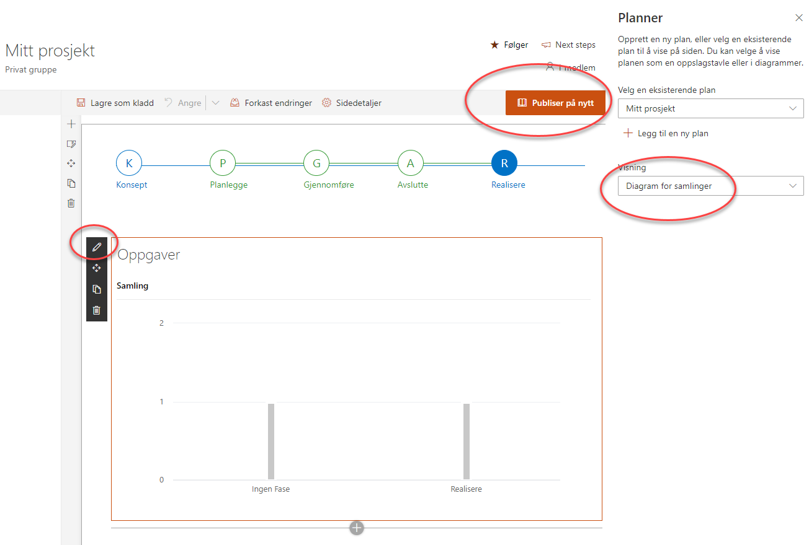
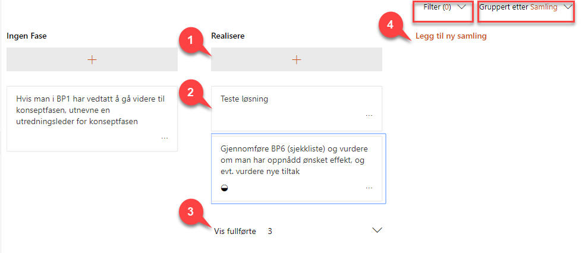
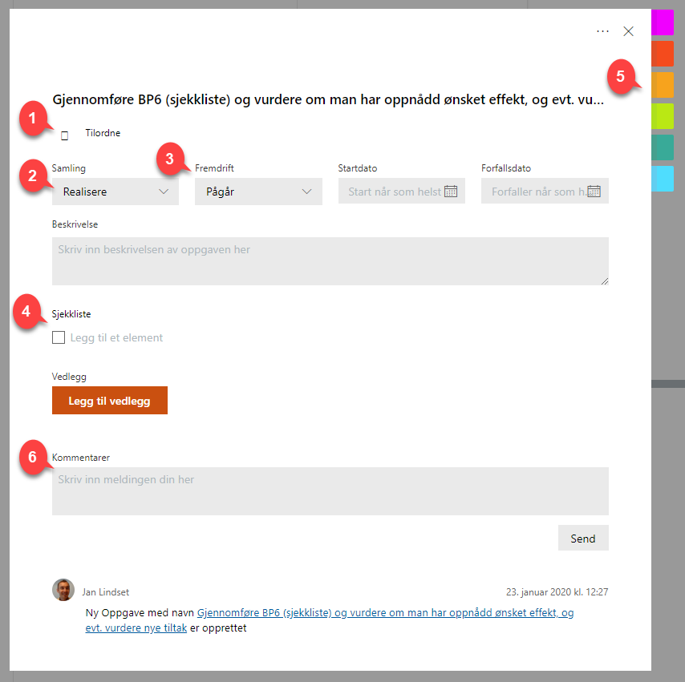

Oppgaver
Innhold
- Oppgaver på prosjektets hjemmeside
- Oppgavesiden i prosjektet
- Oppbygning av oppgaver i Microsoft Planner
Prosjektportalen 365 benytter Microsoft Planner til oppgavestyring.
Oppgavelisten brukes til å lage, planlegge og delegere oppgaver i
prosjektet. Når du oppretter et nytt prosjektrom kan du velge å ta med et sett med standardoppgaver inn til prosjektet. Prosjektportalen kommer med samme oppgaveliste som Difis Prosjektveiviser. Dette kan tilpasses i hver installasjon.
Oppgaver på prosjektets hjemmeside
På prosjektets hjemme side er det lagt inn en komponent som viser status på oppgavene i prosjektet. Denne komponenten kan stilles inn til ulike visninger, for å tilfredsstille behov i hvert enkelt prosjekt.
For å stille om til en annen visning:
- Velg Rediger på prosjektets startside
- Marker komponenten
- Velg «Rediger nettdel» (blyantsymbolet)
- Velg ønsket visning
- Avslutt med «Publiser på nytt» på siden

Alle oppgavene og detaljer rundt disse finner du på prosjektets oppgave side i venstremenyen. I Prosjektportalen 365 kan oppgaver også håndteres i Microsoft Planner.
Oppgavesiden i prosjektet
På prosjektets oppgaveside vil du kunne bearbeide alle oppgaver i
prosjektet.

Typiske aktiviteter når du arbeider med oppgaver er
- Opprette ny oppgave i en samling
- Velg en oppgave for å komme inn på oppgavens detaljside (se neste kapittel)
- Vise/skjule fullførte oppgaver
- Opprette en ny samling
Du kan også betjene visningsområdet på siden med funksjonene:
- Filter – Velg et filter du ønsker å benytte deg av. Her kan du velge blant fritekst, forfaller, etikett, samling eller
tildelt.
- Gruppert etter – Her kan du velge hvilken gruppering du ønsker
Oppbygning av oppgaver i Microsoft Planner

- Tilordne – Her legger du inn navnet på den eller de som er ansvarlig for oppgaven (kan være flere personer om ønskelig)
- Samling – Med dette feltet kan du kategorisere oppgaver, for eksempel etter fase.
- Fremdrift – Angivelse av fremdriftsstatus på oppgaven
- Sjekkliste – Kan benyttes til deloppgaver
- Etiketter – Etiketter kan benyttes til å markere enkeltoppgaver med farge/kode (kan benyttes til gruppering)
- Kommentar – Dette er en logg for den enkelte saken, hvor de som har saken tilordnet seg vil bli varslet pr epost når du trykker Send
- Startdato – Planlagt tidspunkt for oppstart
- Forfallsdato – Dato når oppgaven skal være løst